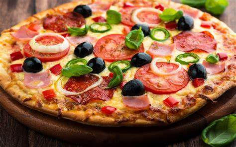

Deliciosamente Simple
Bienvenido a nuestra receta de pizza casera! Preparar una pizza en casa es
una experiencia divertida y deliciosa que puedes disfrutar con amigos y
familiares. Esta receta te guiará a través de los pasos para crear una
pizza auténtica y personalizada, desde hacer la masa hasta la eleción de
tus ingredientes favoritos. Asegúrate de seguir estos simples pasos y
pronto estarás disfrutando de una pizza recién horneada, crujiente pro
fuera y suave por dentro
Ingredientes:
- 11/2 tazas de harina de trigo
- 1 cucharadita de sal
- 1 cucharadita de azúcar
- 1 cucharadita de aceite de oliva
- 1 taza de salsa de tomate
- 2 tazas de queso mozzrella rallado
-
ingredientes adicionales a elección: pepperoni, champiñones,
pimientos, cebolla, aceitunas, etc.
Instrucciones:
- Preparación de la Masa
- En un tazón grande, mezcla la harina, la sal y el azúcar.
-
Agrega el aceite de oliva y poco a poco incorpora el agua tibia.
- Amasa la mezcla hasta que obtengas una masa suave y elástica.
-
Cubre el tazón con un paño húmedo y deja reposar la masa durante 1
hora para que suba.
- Precalentar el Horno:
- Precalienta tu horno a 220°C (430°F).
- Estirar la Masa
-
Después de que la masa haya subido, estírala en una superficie
enharinada para que se ajuste al tamaño de tu bandeja para hornear.
- Armar la Pizza
- Transfiere la masa a tu bandeja para hornear.
- Extiende la salsa de tomate sobre la masa.
- Espolvorea el queso mozzrella uniformemente sobre la salsa.
-
Agrega tus ingredientes favoritosm, como pepperoni champiñones,
pimientos y cebolla.
- Hornear
-
Hornea la pizza en el horno precalentado durante 12-15 minutos o
hasta que la masa esté dorada y el queso burbujee.
- A Disfrutar!
-
Saca la pizza del horno, córtala en porciones y sírvela caliente.
Volver a la pagina principal